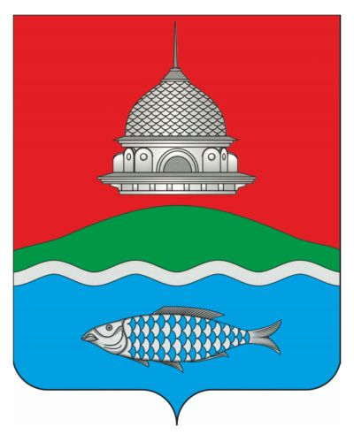
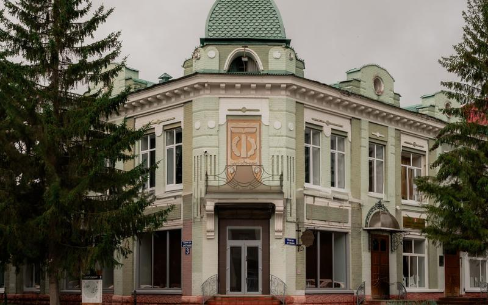

Герб Бугульмы

Бугульминский район
Бугульминский район расположен на юго-востоке Республики Татарстан. Административный центр — город Бугульма.
Район является важным промышленным центром. Здесь развиты нефтяная промышленность, машиностроение и транспортная инфраструктура.
Природа района отличается разнообразием: леса, реки и холмистый рельеф делают его живописным и привлекательным.
В Бугульминском районе есть культурные и исторические достопримечательности, музеи и памятники, связанные с развитием региона.